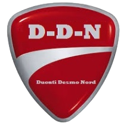

DUCATI DESMO NORD
Accueil
Association
Bureau
Événements
Année2024
Année2023
Partenaires
Régles

Les règles de sécurité des balades
Avant la balade
Planification de l'itinéraire :
Choisir des routes appropriées pour le groupe, évitant les routes dangereuses ou très fréquentées.
Planifier des arrêts réguliers pour le repos, le ravitaillement et les vérifications de sécurité.
Inspection des motos :
Vérifier que votre moto est en bon état de fonctionnement (pneus, freins, éclairage, etc.).
S'assurer que vous avez une assurance valide et les documents nécessaires.
Équipement de sécurité :
Le port du casque est obligatoire.
Il est recommandé de porter des équipements de protection complets (gants, veste, pantalons et bottes renforcés).
Communication :
Informer les participants du plan de l'itinéraire et des points de rassemblement en cas de séparation.
Utiliser des dispositifs de communication
Briefing avant le départ :
Désigner un leader et un serre-file (fermeture) pour encadrer le groupe.
Aborder les consignes en cas d'urgence ou de panne.
Pendant la balade
Formation de conduite :
Rouler en quinconce pour optimiser la visibilité et la sécurité.
Maintenir une distance de sécurité suffisante entre chaque moto.
Respecter les limitations de vitesse et les règles de circulation.
Signaux et communication :
Utiliser des signaux manuels pour indiquer les changements de direction, les arrêts, et les dangers.
Rester vigilant et communiquer tout problème immédiatement.
Gestion des arrêts :
Prévoir des arrêts réguliers pour vérifier l'état des motos et des pilotes.
Ne jamais laisser un participant seul en cas de problème ; le serre-file doit rester en arrière pour s'assurer que tout le monde suit.
Comportement sur la route :
Ne pas se livrer à des comportements dangereux ou des compétitions de vitesse.
Être respectueux des autres usagers de la route.
Après la balade
Débriefing :
Discution sur la balade, des incidents éventuels et des améliorations possibles.
Entretien des motos :
Il est conseillé pour les participants de vérifier et entretenir leurs motos après la balade pour prévenir les pannes futures.